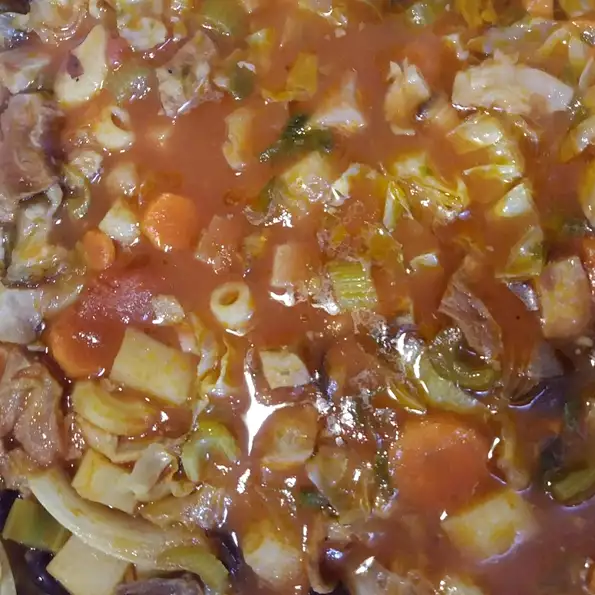

Beans Soup

Best Portuguese Beans Soup
Ingredients
- 1 ham hock
- 1 (10 ounce) linguica sausage, sliced
- 1 onion, minced
- 2 quarts water
- 4 potatoes, peeled and cubed 4 potatoes, peeled and cubed
- You can check more here
- Place ham hock, linguica, onion, and water into a Dutch oven over high heat. Bring to a boil, then reduce heat to medium-low, cover, and simmer for 1 hour.
- Remove meat from ham hock, chop, and return to soup. Stir in potatoes, celery, carrots, stewed tomatoes, tomato sauce, and garlic. Cover, and continue simmering for 1 1/2 hours, stirring occasionally.
- Stir in cabbage and kidney beans, cook until the cabbage has softened, about 10 minutes.